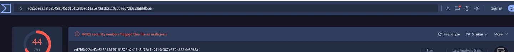
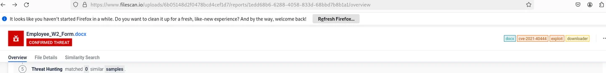
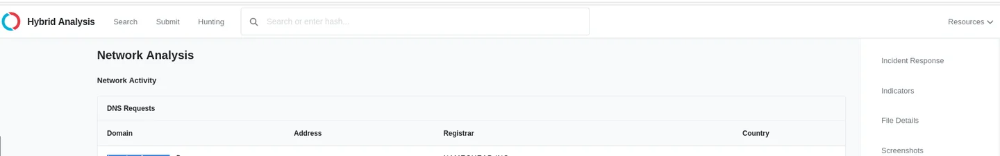
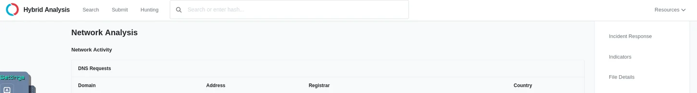

MSHTML
- Categoria
- Desafios
- Caso
- DOC-05
- Registro
- Análise documental
Resumo
Estudo de documentos de Office associados à vulnerabilidade de MSHTML de 2021.
Passo a passo da investigação
Contexto
O exercício compara documentos associados a uma vulnerabilidade do MSHTML documentada em 2021.
Arquivos analisados
Employee_W2_Form.docx—/root/Desktop/ChallengeFiles/Employee_W2_Form.docxEmployees_Contact_Audit_Oct_2021.docx—/root/Desktop/ChallengeFiles/Employees_Contact_Audit_Oct_2021.docxWork_From_Home_Survey.doc—/root/Desktop/ChallengeFiles/Work_From_Home_Survey.docincome_tax_and_benefit_return_2021.docx—/root/Desktop/ChallengeFiles/income_tax_and_benefit_return_2021.docx
Análises e respostas
Employees_Contact_Audit_Oct_2021.docx
Pergunta: Qual é o IP malicioso presente no arquivo? Método: Extraí o arquivo no VirusTotal e consultei a seção Relations.

Employee_W2_Form.docx
Pergunta: Qual é o domínio malicioso presente no arquivo? Método: Enviei o arquivo ao FileScan e consultei o resultado da análise.

Work_From_Home_Survey.doc
Pergunta: Qual é o domínio malicioso presente no arquivo? Método: Analisei o arquivo no Hybrid Analysis, consultei uma sandbox e verifiquei o IP associado ao domínio.

income_tax_and_benefit_return_2021.docx
Pergunta: Qual é o domínio malicioso presente no arquivo? Resultado: o relatório associou a amostra a um domínio externo suspeito.

Vulnerabilidade explorada
Pergunta: Qual vulnerabilidade foi explorada pelos arquivos? Resposta: CVE-2021-40444. Identifiquei a CVE em comum ao analisar os arquivos no VirusTotal.
Exercício simulado. Algumas capturas foram recortadas ou tiveram campos ocultados.